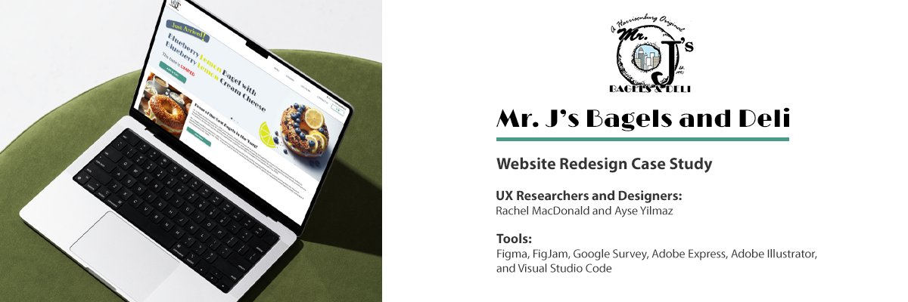
HOME.. / ..PROJECTS../.. MR. J'S BAGELS AND DELI
Need an easier way to scan and order bagels at Mr. J’s Bagels and Deli? Check out the redesigned website concept (not a real product) for easily scannable menus, an updated page layout, and for a straightforward in-website ordering process.
-- The following Problem Statement is based on a hypothetical, made-up character scenario that ONLY applies to the development of the case study and final prototype. --
Danny, a busy accounting manager new to the Shenandoah area, is excited to discover Mr. J’s Bagels
and Deli near his hiking trail. However, while browsing the Menu page and only seeing the list of menu options without prices or pictures, he feels uncertain about proceeding with his order.
With limited time in the area, Danny wishes the website
allowed him to quickly and efficiently decide on his order to save
time and continue with his day.
We are establishing a website redesign for the eatery so that users can easily scan the website and menu and find all the necessary information.
Our goal is to help build a user’s confidence when deciding to order from the establishment online; especially if they are new to the location.
If you’re from the Shenandoah area, specifically Harrisonburg, Virginia, there’s a pretty good chance that you’ve heard of Mr. J’s Bagels and Deli. Gradually expanding with (now) four locations, Mr. J’s is putting itself out there with a large variety of bagel/deli options and its catering service.
Check out the current website below!
This video covers an example of the website's layout from June 2024.
After initially analyzing the current layout of the site, including the homepage and the website's menu, I drafted up the following proto-persona. The assumption that we derived was that Danny Fanton, being new to the Shenandoah area and not having a whole lot of time to spend there, would not spend a lot of time exploring an eatery's website or ordering from an establishment if their website was hard to scan, text-heavy, and did not have prices or images of their products (in this case, bagels and sandwiches).
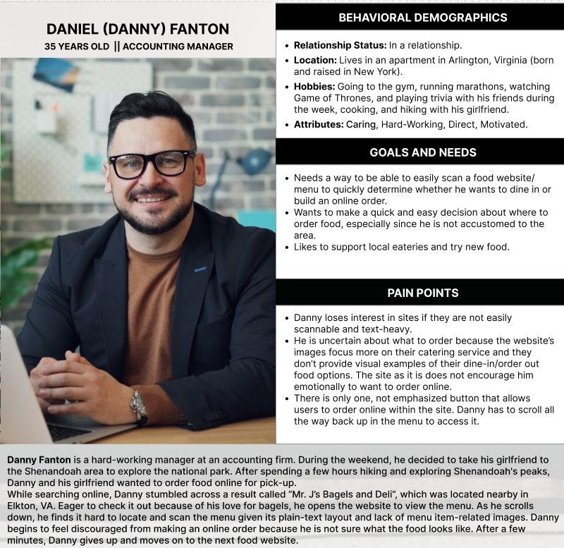
Once we established our proto-persona's goals and needs, we began to draft our User Research Plan and survey questions. The goal we set for our research and the inspiration behind our interview questions was to identify the experiences new and existing users go through when determining what makes an eatery’s online presence attractive/more appealing in order to encourage users to 1. Order from their website/application/business, and 2. Stay on their platform and explore rather than looking for alternative options.
More specifically, the research questions we centered our interview script around included:
Due to our limited timeline and technical difficulties, we were able to conduct and transcribe three user interviews. Additionally, 15 participants responded to our Google Survey.
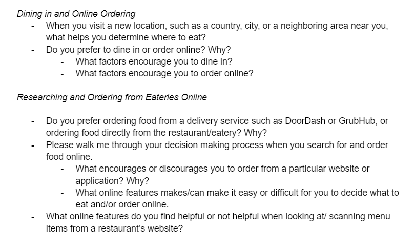
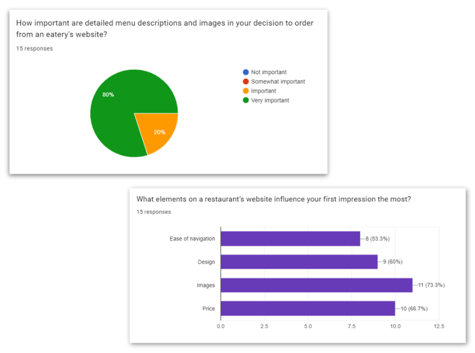
Based on our findings, we compiled the following affinity map. Common elements that we came across were the menu, design, preference, and experience:
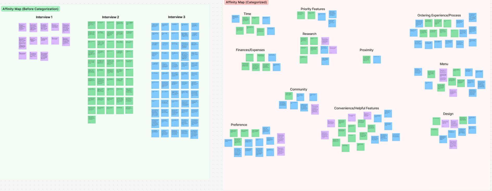
Additionally, some of the key quotes we captured during our interviews related to how important it is to users for a website to be transparent about their establishment's offerings (i.e., images, prices, descriptions, etc.) before they decide to order online:
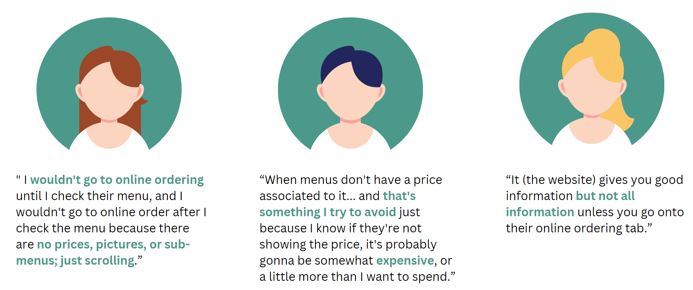
After reviewing our results (survey and interview), we felt like we had a stronger grasp of what our users' true pain points were.
When analyzing our interview transcripts and affinity chart, we were able to note that…
Based on our findings, we were able to update our persona's (Danny's) story as someone who wants to build trust with an eatery's website, such as seeing information transparently (images and prices) before deciding to order online. Danny's persona was someone who wanted to feel confident in their decision to order, especially since he is new to the location.
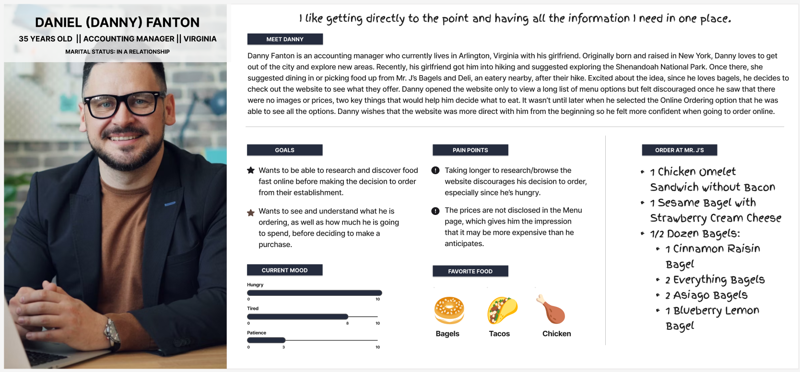
From there, my partner Ayse and I worked together to brainstorm solutions that could help expedite the time it takes a user to decide and order from the website, and to ensure that they feel more confident throughout the decision process.

After conducting our "I Like/I Wish/What If" brainstorm session and conducting a dot vote based on said ideas, we found that our solutions focused on
More specifics about our solutions can be seen in the following Feature Matrix Prioritization:

Next, we composed our User Storyboard and Journey Map to tell the story that Danny and his girlfriend go through when venturing off for a meal after a long hike in the Shenandoah area.
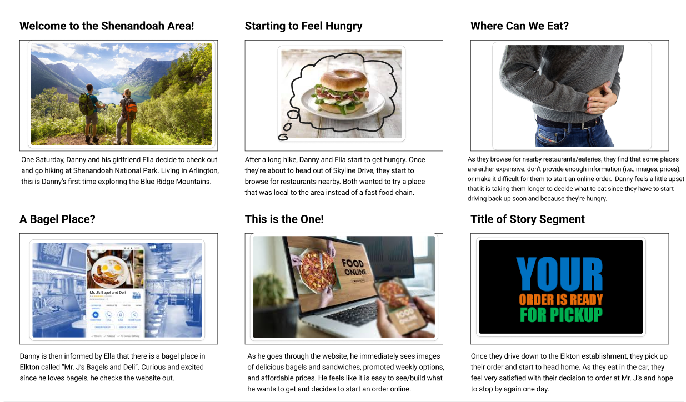

And finally, before designing our wireframes and low-fidelity prototype, my partner and I created an updated version of the website's user flow; one that would navigate them through an in-website ordering flow where they could view a more visual representation of the menu options, customize directly from the website, add to cart, and proceed to checkout.

Another set of tasks my partner and I completed before starting the low-fidelity user flow was the heuristic evaluation and webpage annotations for the existing website. As we analyzed the current layout of the site, we found that as of that stage,
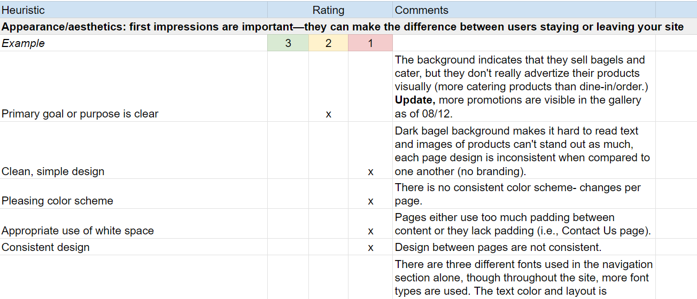
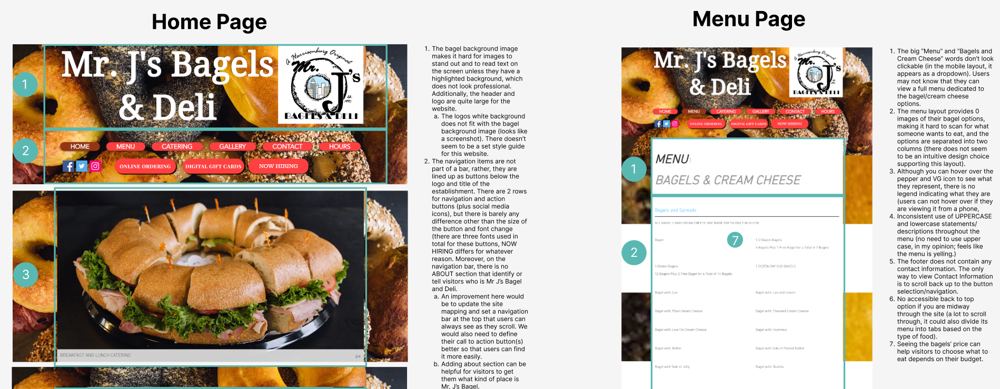
Once we noted these items and also compared it to our feedback and user research, it was time to design in Figma!
My first take at the lo-fi user flow focused on selecting a menu option, customizing it, adding it to the cart, and then viewing the item in their shopping cart. I also designed a step for users to select their desired location and pickup/delivery options since Mr. J's currently has four locations to choose from.

We also established a Site Map to update the current layout for the navigation bar. Our goal here was to have it hold the key pages that users would click on the most, such as the Menu, Catering, and Locations. The Add to Cart/Start Order action would then be the sole button in the navigation bar so that users could find it more easily (once they're ready to order online). The remaining pages were placed in the footer.
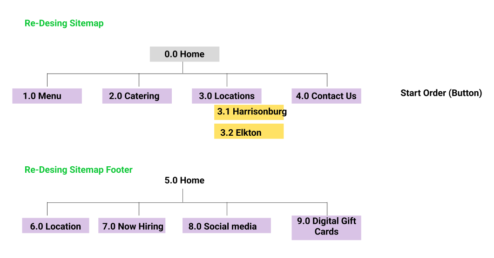
">My goal for this lo-fi design was the show that each item could be clicked on or tapped in order to add/remove an ingredient. Additionally, if the users wanted to view all the ingredients, they could do so by selecting the My Ingredients tab. It was later noted, however, that the layout of the customization screen was not as intuitive as I thought it would be.
After we conducted our lo-fi usability tests, we discovered that users found it

After analyzing our testers' reactions and constructive feedback, I took the flow back to the drawing board and designed a different layout for the customization screen. This was one where, per the feedback we received, all the ingredients were listed out as they were being added and removed to/from the order.
Additionally, this improvement was implemented so that users would not feel like they had to constantly select the Add to Cart button as they went through the flow (that was a bigger spark of user frustration for one of our testers).

The next step was for my partner and me to design the rest of the website's pages. Prior to this, we had only completed the lo-fi designs for the home page, the menu/customization page/modal, Location Selection page, and the View Cart page.

Once we had established the overall layout for our digital lo-fi wireframes, we began to work on the redesign's style guide. My partner, Ayse, pitched a few color schemes that would fit with the eatery's logo, as well as help with our vision for Mr. J's updated branding, and we both worked together to decide which one suited the vision best.
We also wanted to reapply the same font (or a similar font, "Limelight") that is currently seen in the logo's "Bagels and Deli" line. Although the logo currently displays three different fonts, we wanted to apply this font more so throughout the redesigned website, as it already provides a fun style and characteristic and is one that could solidify the brand's vibe as an establishment.

Once our style guide was defined, we were ready to start our mid-fi designs/prototypes.
When designing our mid-fi, we received a recommendation from our teacher to set up a flow where the user had already selected their location and pickup/delivery information. Based on that, we were able to focus more on the main flow where users selected and customized their bagels/sandwiches (to follow along with our built flow, please see the test cases listed below).

Once that was completed, we were ready to do another round of testing!
Our goal for our mid-fi usability tests were to see how users felt about the current state of our redesign (first impressions) and to navigate through the prototype's three tasks (tasks that were drafted based on our persona's user story):
Danny is ordering a bagel for himself and his girlfriend. His girlfriend says she wants a Sesame bagel with strawberry cream cheese. Please complete this order.
Next, Danny wants to try out Mr. J's "Chicken Omelet Sandwich". He would want to order this sandwich on an Egg bagel and without the bacon. Please read the sandwich's description and complete this order.
Please view the cart to review your orders.
After conducting four usability tests, all of which having an 100% completion rate, our users...
One of our usability testers noted that when they viewed the cream cheese flavors, it would probably make more sense to show an image of the cream cheeses themselves rather than the actual ingredients. The user noted (the following text is paraphrased) that


After hearing this perspective, I was excited to take it back/apply it to our iterated hi-fi design, which can be found below:
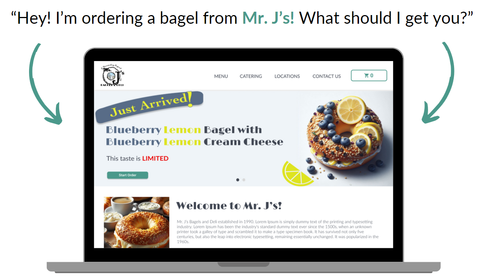
Additionally, I applied my front-end development (as of August 2024) skills to code the home page's layout. I used Visual Studio Code and GitHub to create the final product you see here.
Overall, I wanted to capture the minor interactions users could experience on the website, such as hovering over the cards, navigation options, and buttons, and to show how the design could look if it were responsive.